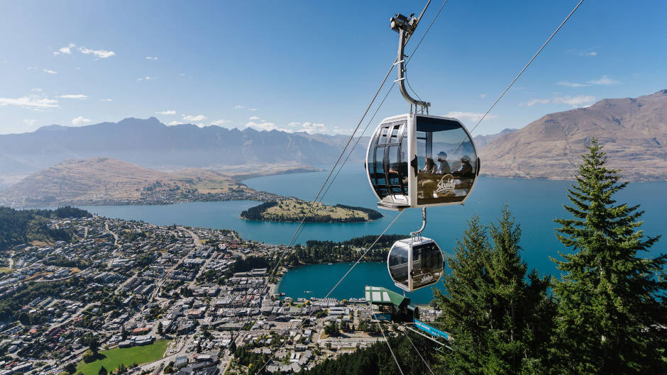

Queenstown, Nova Zelândia
Queenstown, localizada na Ilha Sul da Nova Zelândia, é um destino famoso mundialmente por suas paisagens deslumbrantes e como a capital da aventura. Cercada por montanhas majestosas e banhada pelo lago Wakatipu, Queenstown é um paraíso para os amantes da natureza e os buscadores de emoção. A cidade combina uma vibrante cultura de café, restaurantes de alta qualidade e uma atmosfera acolhedora, tornando-a um local ideal tanto para relaxar quanto para se aventurar em atividades emocionantes. É o lugar perfeito para quem deseja explorar as belezas naturais da Nova Zelândia e experimentar uma variedade de esportes radicais.

O que fazer em Queenstown
-
Skyline Queenstown
O Skyline Queenstown é uma atração imperdível que oferece uma vista panorâmica da cidade, do lago e das montanhas circundantes. O passeio de teleférico leva os visitantes ao topo do Bob's Peak.
-
Lago Wakatipu
Um dos lagos mais belos da Nova Zelândia, com águas cristalinas e um ambiente sereno. É cercado por montanhas impressionantes, tornando-o um local perfeito para atividades ao ar livre.
-
Aventura em Bungee Jumping
Queenstown é conhecida como a "capital do bungee jumping" do mundo, e o famoso Kawarau Bridge é o local onde tudo começou. Para os aventureiros, é uma experiência imperdível saltar de uma altura de 43 metros na Kawarau Bridge e experimentar a adrenalina de saltar de um penhasco com um elástico preso aos pés. Opções de bungee jumping também estão disponíveis em outras locais, como a Nevis Bungy, a 134 metros de altura.
-
Adventure Activities: Jet Boating
O jet boating é uma experiência emocionante que envolve deslizar rapidamente sobre as águas rasas dos rios, com manobras emocionantes em alta velocidade.
-
Esqui e Snowboard
Durante o inverno, Queenstown se transforma em um destino de esqui popular, com várias estações de esqui nas proximidades, como Coronet Peak e The Remarkables.
Melhor Época para Visitar
A melhor época para visitar Queenstown depende das preferências pessoais e das atividades desejadas. Durante o verão, de dezembro a fevereiro, o clima é agradável, perfeito para caminhadas e atividades aquáticas. O outono, de março a maio, é ideal para admirar as cores vibrantes da natureza. O inverno, de junho a agosto, atrai os amantes de esportes de neve, enquanto a primavera, de setembro a novembro, é ótima para explorar a natureza em flor e participar de festivais.